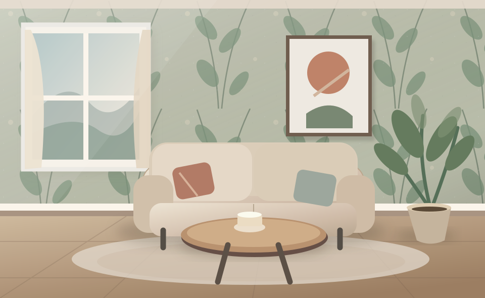
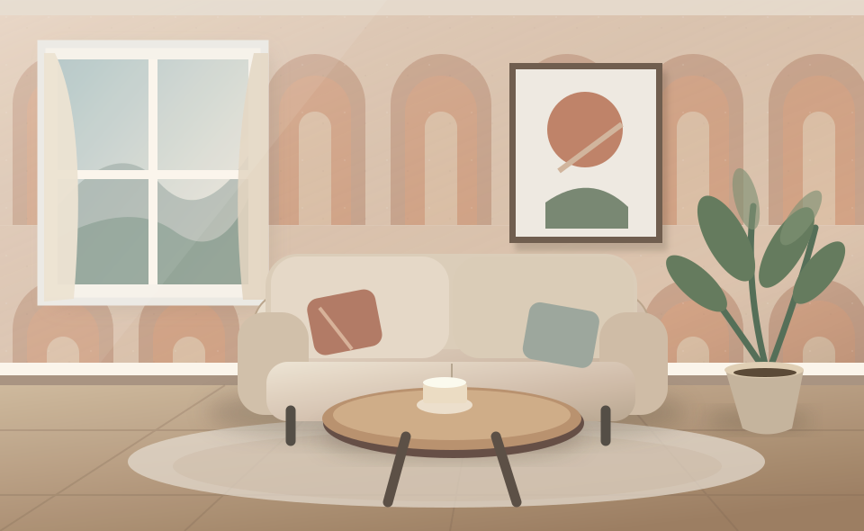
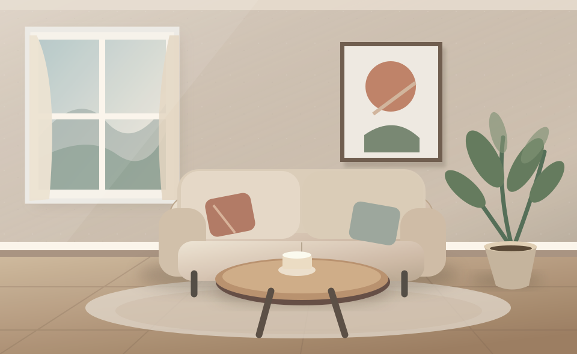
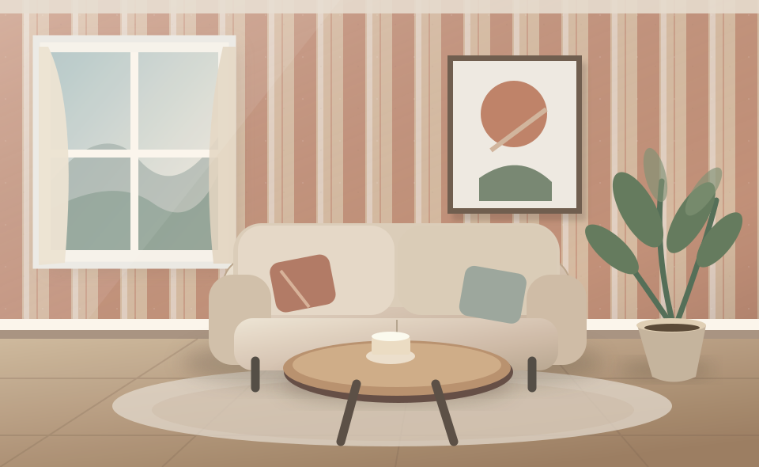
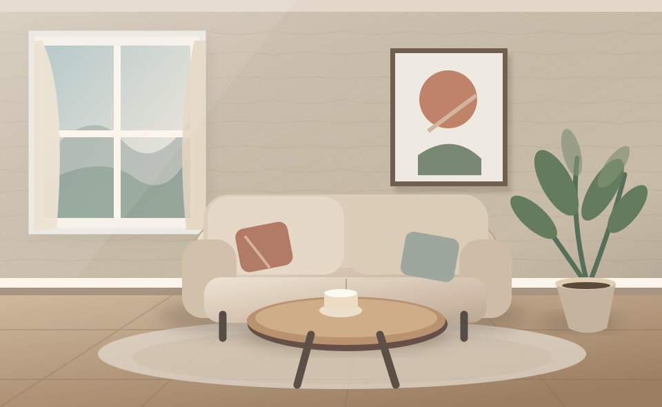

FEEL
THE DETAIL.
ผิวสัมผัสอบอุ่น เสริมความนุ่มนวลให้บรรยากาศภายในห้อง
15 เทคนิคออกแบบเว็บไซต์ที่ไม่ได้มีไว้แค่ดู
แต่มีไว้ให้ เลื่อน • คลิก • ลาก • หมุน • สัมผัส ด้วยตัวคุณเอง


เลือกทดลองลูกเล่นแต่ละแบบได้เลย
ทุกหัวข้อมีการทำงานให้ทดลองจริง
ให้การเลื่อนเว็บกลายเป็นส่วนหนึ่งของการเล่าเรื่อง
เลื่อนลงเพื่อเปลี่ยนผนังเปล่าให้เป็นห้องที่ติดวอลเปเปอร์แล้ว

เลื่อนหน้าจอเพื่อหมุนตัวอย่างวัสดุแบบสามมิติ โดยมุมมองจะเปลี่ยนตามตำแหน่งการเลื่อน
ขยับเมาส์บนภาพ หรือเลื่อนหน้า เพื่อดูวัตถุแต่ละชั้นเคลื่อนที่ด้วยความเร็วต่างกัน
คลิกเปลี่ยนบรรยากาศห้อง ด้วยการเปลี่ยนฉากแบบภาพยนตร์

ภาพด้านซ้ายจะอยู่กับที่ ในขณะที่ข้อความด้านขวาเปลี่ยนไปทีละเรื่องเมื่อเลื่อนลง

ผิวสัมผัสอบอุ่น เสริมความนุ่มนวลให้บรรยากาศภายในห้อง
โทนสีเขียวและลวดลายธรรมชาติ สร้างความสงบให้พื้นที่ใช้งาน
เปลี่ยนทุกผนังให้มีบุคลิกด้วยเส้นสายและแพตเทิร์นที่แตกต่าง
ให้ผู้ชมมีส่วนร่วมกับภาพ สินค้า และข้อมูลด้วยตัวเอง
เลื่อนลง แล้วแกลเลอรีจะวิ่งไปทางขวา →
ลากบนตัวอย่างวัสดุเพื่อหมุนดูรอบด้าน รองรับทั้งเมาส์ นิ้วสัมผัส และปุ่มลูกศรคีย์บอร์ด
แตะจุดบนภาพห้องเพื่อดูรายละเอียดวัสดุ จุดติดตั้ง หรือองค์ประกอบการตกแต่ง
วอลเปเปอร์ลายโค้ง โทนอบอุ่น เหมาะกับห้องพักผ่อน
CLICK OTHER POINTS ↗ลากตัวแบ่งไปทางซ้ายหรือขวา เพื่อเปรียบเทียบห้องก่อนและหลังตกแต่ง
ดูรูปทรงเปลี่ยนเป็นอีกรูปทรงอย่างลื่นไหล ไม่ใช่การตัดภาพธรรมดา
สัมผัสเล็ก ๆ ที่ทำให้เว็บไซต์มีเอกลักษณ์น่าจดจำ
นำเมาส์ไปใกล้ปุ่ม แล้วดูว่าปุ่มจะเคลื่อนเข้าหาตำแหน่งเคอร์เซอร์อย่างนุ่มนวล
TRY MOVING YOUR CURSOR AROUND THE BUTTON
เคอร์เซอร์จะเปลี่ยนบทบาทตามพื้นที่ที่ชี้ ลองชี้ไปที่ข้อความแต่ละแถว
ตัวอักษรแต่ละตัวปรากฏทีละจังหวะ พร้อมการยกขึ้นและหมุนเล็กน้อย
ลองคลิกการ์ดแต่ละใบ การจัดวางและข้อมูลจะตอบสนองต่อสิ่งที่เลือก
พื้นผิวและลวดลายที่ออกแบบให้พื้นที่มีเอกลักษณ์
48 เฟรมภาพจริงที่สร้างไว้ล่วงหน้า เลื่อนหน้าเพื่อควบคุมการติดวอลเปเปอร์แบบเฟรมต่อเฟรม หรือทดลองลากแถบด้านล่าง
นี่คือตัวอย่าง Front-end Interactions ทั้ง 15 เทคนิค
สามารถนำแนวคิดไปประยุกต์กับเว็บสินค้า เว็บไซต์แบรนด์ และ Landing Page ได้